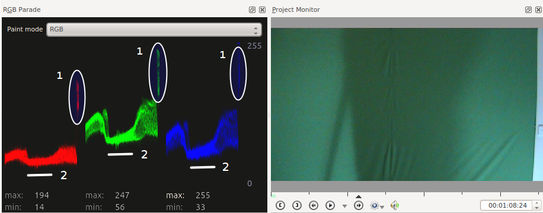

RGB Parade¶
Contents
Displays a histogram of R, G and B components of the video data. This data is a 3D histogram.
The horizontal axis represents the horizontal axis in the video frame. The vertical axis is the pixel luminance from 0 to 255. The brightness of the point on the graph represents the count of the number of pixels with this luminance in this column of pixels in the video frame.
In the sample screenshot below of a green screen with a shadow on it and with a right edge that reveals a white wall, you can see how the scope works. The circled regions labeled 1 are on the right side representing the fact that there are several columns of pixels that are quite bright whitish/gray. So these regions are higher up on the Y axis.
The regions labeled 2 are in the middle of the scope and the dip in the graph there shows the shadow on the screen at this point. The average luminance of the pixels in these columns is lower.
For more information, see Granjow’s blog on the waveform and RGB Parade scopes. This blog gives some information on how to use the data provided by the RGB Parade to do color correction on video footage.
The RGB Parade option in the View menu is somewhat different from the RGB Parade in that displays the histogram in the application whereas the RGB Parade effect writes the histogram into the video output file.